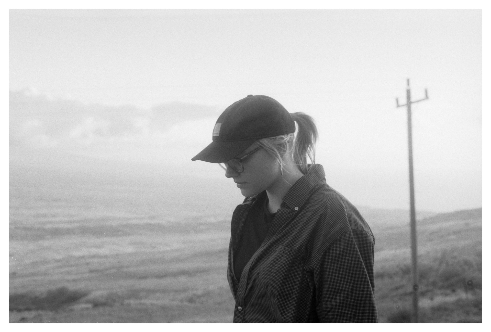

What I Do

I was born and raised in South Philadelphia, and I currently live in Chicago, Illinois. I am a student of Computer Science with a passion for developing user-friendly and beautifully designed software that pleases the eye. I am an advocate for test driven development and well organized code. I am very excited to use what I have learned and apply it to new job opportunities that come my way. Languages I am most comfortable with are Python, Java, and JavaScript (HTML + CSS), and I also have experience with React + Node.js and C. I am currently looking into Scala as part of my coursework and Ruby as well.

I graduated in 2022 from Central High School in Philadelphia. I am currently a student at Loyola University Chicago, where I am pursuing a BAS in Computer Science. I am set to graduate in the Spring of 2026. Some of my relevant coursework I have taken includes: multiple Data Structures courses, Object Oriented Design, Design and Analysis of Algorithms, Ethical Issues in Computing, and Discrete Structures. I am currently taking Progamming Languages and Software Development of Wireless and Mobile Devices.